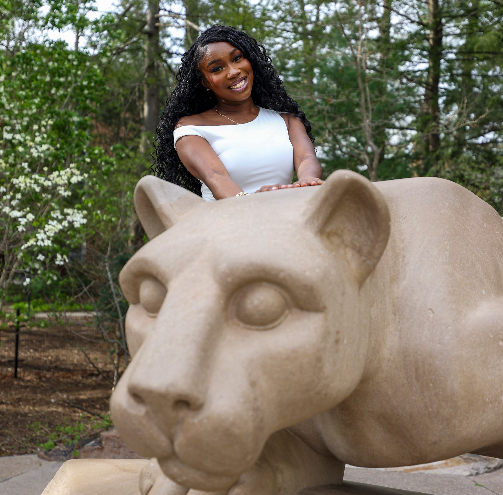

About Me
Learn more about my background, interests, and goals as a Digital Media student and designer.

Background
Hello! My name is Temitope Sakote, and I am from Prince George’s County, Maryland. I graduated from Penn State Behrend with a Bachelor’s degree in Digital Media, Arts, and Technology along with a certificate in Human Factors.
My academic experience helped me explore creative technologies such as web design, user experience design, digital storytelling, multimedia production, and research-based design projects.
Career Goals
I want to pursue a career in UI/UX and product design because I enjoy combining creativity, technology, and user-centered thinking. I like designing interfaces that are visually appealing, organized, and easy for people to understand and navigate.
Through my Human Factors certificate, I became more interested in how people interact with technology and how thoughtful design decisions can improve usability, accessibility, and overall user experience.
One of my goals is to create digital products and experiences that feel intuitive, modern, and user-friendly while still maintaining a strong visual identity.
Why DIGIT?
I chose the DIGIT major because it allowed me to combine creativity with technology while exploring different areas of digital media and design. Through the program, I gained experience with website development, interactive media, research, and user-centered design.
Earning my Human Factors certificate also helped me better understand how people interact with technology and how thoughtful design can improve usability and accessibility.
I believe strong design is not only about appearance but also about usability and accessibility. I enjoy continuing to improve my skills and learning new ways technology can support creativity.
About This Website
This website represents my growth as a student, designer, and creator. Throughout the site, you will find projects, reflections, and examples of work that showcase both my technical and creative abilities.
Thank you for visiting my portfolio website!
Fun Facts
- I was born in Laurel, Maryland and raised in the Largo/Bowie area.
- My favorite colors are pink and purple.
- My siblings and I share the same birthday month.
- I was on the Penn State Behrend Gameday Cheer Team.
-
I love Hello Kitty.